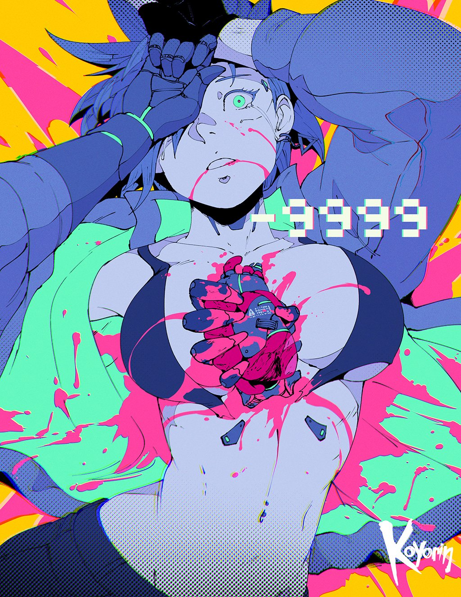

One space, so many possibilities
Make the open space open to more

An open space for open mind
A comfortable spot for everyone
Anyone can hold the helm when the sea is calm

I work best when my space is filled with inspiration
Haec et tu ita posuisti, et verba sunt. Contemnit enim disserendi elegantiam, confuse loquitur. Bona autem corporis huic sunt, quod posterius posui, similiora.
The trick to getting more done is to have the freedom to roam around
You really must see our earlier articles
Problems are not stop signs
Guos hic sciebam esse, veni ut auferrem, quos legerem, dum essem otiosus. At enim, qua in vita est aliquid mali, ea beata esse non potest.
Quiet time is the best time
Being unique is better than being perfect
Anyone can hold the helm when the sea is calm
Quasi vero aut concedatur in omnibus stultis aeque magna esse.
Change is always happening
Tertium autem omnibus aut maximis rebus iis, quae secundum naturam sint, fruentem vivere.